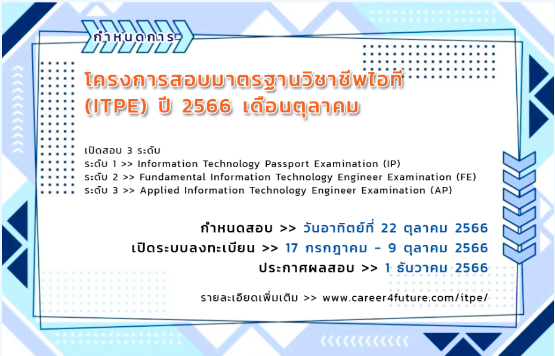

[สาขาวิทยาการคอมพิวเตอร์]
ภาควิชาวิทยาการคอมพิวเตอร์ก่อตั้งขึ้นในปี พ.ศ. 2548 เป็น 1 ใน 11 ภาควิชาของคณะวิทยาศาสตร์และเทคโนโลยี มหาวิทยาลัยเทคโนโลยีราชมงคลกรุงเทพ สาขาวิชาเปิดสอน วท.บ. สาขาวิชาวิทยาการคอมพิวเตอร์และอาจารย์ประจำ 8 คน นักศึกษาระดับปริญญาตรีประมาณ 35 คน
ในปี พ.ศ. 2556 ภาควิชาได้เปิดหลักสูตรวท.บ. สาขาวิชาเทคโนโลยีสารสนเทศ ระดับปริญญาตรี ประมาณ 25 คน
ในปี 2559 เรามีอาจารย์ประจำ 11 คนและนักศึกษาระดับปริญญาตรีประมาณ 300 คนใน 2 โปรแกรม
[ข่าวสาร]
